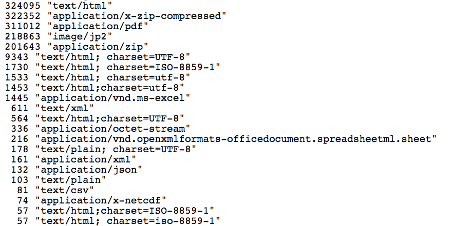

What's Dat?


Who Am I?
- Max Ogden (@denormalize)
- Code For America 2011
- csv,conf, nodeschool
- Ask me about my 200gb of cat pictures
- 8 Person Tech Non-Profit
- Distributed systems + data sharing software for the public good
- Focus has been on scientific data sharing
- Me plus 1 PHD, 1 designer, 5 engineers
- Open source: ~50 million npm downloads/month
What We're Working On
- Archiving lots of scientific data
- Implementing new data sharing protocols
- Building user friendly applications
- Building non-profit partnerships with archives, publishers and scientists
1. Archiving lots of scientific data
How Data.gov Works
- 1. Agencies create metadata for their datasets
- 2. Publishes them at e.g. data.nasa.gov/data.json
- 3. Data.gov regularly harvests these
- 4. Data.gov provides metadata search/discovery
- 5. Agencies host data, not Data.gov
Mission: Backup Data.gov
- A dedicated effort to back up Data.gov had never been done
- First full metadata export in partnership with Data.gov
- First full external mirror in partnership with CDL (40TB)
- Data.gov launched new 'report missing data' feature
- Released 40GB of metadata (HTTP headers, timestamps, hashes)
Data.gov HTTP Content-Types

Data.gov Domain Distribution

Feb 14: Trump Deletes Data

Data Rescued To Date (March 2017)
Question: Where is NASA/NOAA metadata?
Estimates range EOS alone is 20-60PB of data.
Challenge: Download One NASA Dataset
How hard could it be? We just want to grab metadata and data.
What's Next
- Get more data.json coverage at NASA/NOAA. Less HTML, more data (collaborative)
- Establish network of research libraries mirroring/curating data (parallel)
- Distribute data through a global volunteer censorship resistant peer to peer network (mad science)
2. Implementing new data sharing protocols
- Distributed syncing filesystem (like Dropbox/Google Drive)
- Swarm based distribution (like BitTorrent)
- Version control (like Git)
- Designed for the web (open source, standards based, works in a browser)
- Our metadata "vault" containing everything from Data.gov, us, and Internet Archive
- A trusted archive of dataset metadata, "dataset of datasets"
- Distributed over Dat so we can update with new data
- Enables lots of fun use cases with distributed archiving
3. Building user friendly applications
4. Building non-profit partnerships with archives, publishers and scientists
Who We've Been Talking To
- Archives: Internet Archive, CDL, Dataverse
- Publishers: PLOS, eLife, f1000
- Researchers: DataRefuge (UPenn/Temple), Mozilla Science Lab, rOpenSci